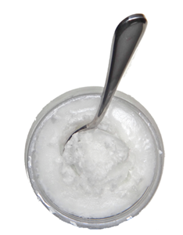
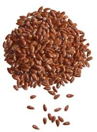
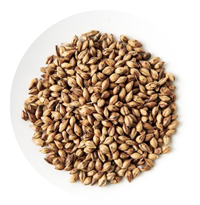

The Real Truth Behind Nutrition Fads
Robyn Barefoot, RD Registered Dietitian
We’ve heard of new trends within the news, media or maybe your neighbor, but do we know the real evidence behind it all? Tune in below to discover science-based evidence behind some of the most popular nutrition trends.
Coconut Oil
Within the last few years, coconut has been highlighted as the new ‘super food’. We’re using it in oil form, finding it as an alternative to dairy milk and eating it on it’s own. So, what’s with all of the hype? Coconut oil is composed of 87 – 90 % saturated fatty acids. What does this mean? Saturated fats are naturally present in many foods we eat including high fat milk, cheeses, meats and eggs. We want to choose saturated fats less often has they can be detrimental to our health. Replacing foods that are high in saturated fat with healthier options can lower blood cholesterol levels and improve lipid profiles. The American Heart Association recommends aiming for a dietary pattern that achieves 5% to 6% of calories from saturated fat. The present research suggests that coconut oil does raise HDL (or healthy) cholesterol, but at the same time increases total cholesterol and LDL (lousy or ‘bad’) cholesterol levels. Therefore, coconut oil cannot be recommended as an alternative for traditional cooking oils such as canola and vegetable oils regardless of its effect on HDL. In terms of weight management, there is an insufficient amount of evidence to support weight loss in obese populations.
Foods That "Burn Belly Fat"
As much for us to wish it were true, unfortunately there is no one food to help with tummy fat. The fat that lay in our abdomen is called visceral fat. It lay deep within the abdominal cavity, crowding our organs increasing our risk of chronic conditions. While there are foods that may aide in suppressing appetite (due to fibre and protein content), foods do not have the ability to burn fat – if they did, wouldn’t we all be eating them 24/7? Eating a whole, well-balanced diet filled with variety and limiting sweets and sugar-sweetened beverages can help aide in weight loss which in turn can reduce waist circumference. Typically, these foods that claim to burn belly fat are fish, nuts, milk and cherries. Let’s think about this …these are all whole foods providing many nutritional benefits and eaten in moderation along with a caloric deficit or increased physical activity may alter the scale in a desirable manner but by no means are these foods making their way through your gut and dissipating fat cells.
Pink Himalayan, Kosher, Rock & Sea Salt
Sodium is a mineral found in salt. All types of salt are high in sodium, yes – even the glorified Himalayan, kosher, rock & sea salt. While sodium is needed by our bodies to control blood pressure, too much can lead to health problems. Unfortunately, all salts (even table salt) effect our blood pressure. Sea salt amongst other salts have just about the same sodium content. The differences include processing, how they taste and their texture. That being said, those who use sea salt and other salts may use less due to the different taste and texture. All in all, salt is hidden in almost everything we eat including canned goods, packaged meals, deli meat, and even healthy choices like bread and milk. Rule of thumb? Don’t use the salt shaker – rely on herbs and spices more often to boost the flavour of your food. Remember: Salt preference is an acquired taste that can be unlearned. It takes about 6-8 weeks to get used to eating food with much lower quantities of salt, but once it's done, it's actually difficult to eat salty foods.
‘Mylk’ Alternatives
We’ve heard of them all – almond, cashew, coconut, rice, hemp milk… last week I came across a ‘mylk’ made from pea vegetable protein – sounds appetizing right? So what’s the issue?
- Mylk alternatives, with the exception of soymilk provide 1-2g of protein per serving, as opposed to 8g in traditional cow’s milk.
- Mylk alternatives do not always offer the calcium and vitamin D.
- Mylk alternatives are often sweetened.
But … what about the hormones and antibiotics in dairy milk? To date, Canada has the safest and healthiest milk supply in the world. There are no hormones in Canadian milk. Should cattle be put on antibiotics, they are separated and tagged so that when they are milked, the milk will be dumped and will not enter the Canadian food system. As for American milk, there may be antibiotics however no evidence suggests this is detrimental to our health at present.
What to do?
- Ensure the meal or snack you’re enjoying has an alternative source of protein if you choose to use these mylk alternatives.
- Purchase unsweetened dairy-alternatives.
- Ensure the mylk you’re using is fortified with both calcium and vitamin D.
Sugar is Sugar
I’ve heard it all … cane sugar, rock sugar, date sugar, raw, coconut, agave, honey – the truth of the matter – it’s all just about the same. Regardless, sugar is a carbohydrate, providing 4g per teaspoon of sugar. If you’d like to get technical table sugar is 100% sucrose (that’s 50% fructose and 50% glucose), already broken down before it enters the body. In contrast, agave is 75% fructose and 20% glucose, we then have to metabolize this and force our body to break it down further.
The American Heart Association recommends that women get no more than 6 teaspoons of added sugar a day (24 grams), and that men consume no more than 9 teaspoons of added sugar (36 grams). What does this mean? Well, a 355mL can of cola provides 39 grams of sugar, a chocolate bar 26+ grams per serving and just 3 tablespoons of your favourite candy-containing trail mix provides 11g of sugar. Regardless, this can add up quickly. Rule of thumb? Use the sweetener source you prefer. Add it to your unsweetened yogurt or spread onto your toast; just don’t add it too generously.
Apple Cider Vinegar
We hear these tales such as mixing cider vinegar with water and lemon, chug it back, and not only will your metabolism miraculously increase, but you’ll weigh less, have less appetite (probably true because, boy oh boy I couldn’t imagine wanting to eat after that potent shot) and boosts energy. Wouldn’t all that be nice? Sure it would, but why isn’t it necessarily true?
While research is still in the works, only 1 trial concluded that a small weight loss of only 1-2 kg occurred over a 12-week period after consuming 15-30 mL of cider vinegar daily. This statement draws two questions – 1) Was the weight loss truly caused by the addition of vinegar into the diet, or more so other behaviours changed by the participant throughout this trial? And 2) is it safe or enjoyable to consume cider vinegar on a daily basis? Current research suggests the acidic nature of such vinegar can both irritate and damage tissues such as the esophagus.
Juice Detoxes and Cleanses
Dietitians cringe when we see these words “teatox”, “body cleanse” etc. Well, we hate to break it to you but our very own organs – yes our kidneys and liver are constantly cleansing and detoxifying 24 hours a day. For example, let’s look up the role of the kidneys. In any resource, you will see that their primary role is to excrete waste and foreign substances from the blood. The liver acts similarly with a role in the detoxification of alcohol through complex pathways via alcohol dehydrogenase and acetaldehyde dehydrogenase. Once our liver cells become scarred and destructed, there is no pill, nor cleanse that can reverse this.
I like to say, regardless if a cleanse or detox is a series of juices, supplements etc. and is not sustainable in the long term, is it worth your money, or your while? Probably not. Often these cleanses leave us feeling deprived and while the weight may ‘fall off’ within a short period of time, it will come back on even faster than it came off. Find a way of eating you can stick with for the rest of your life as you would with a chronic disease. For example, if you have diabetes, you eat to maintain a healthy blood sugar life long. Must I say more?
Flax, Chia & Hemp
Bingo! Flax, chia and hemp seeds are great toppings to cereal or yogurt and awesome additions to hummus and smoothies – they even make a great crust on chicken and fish prior to searing, and yes they’re truly healthy. These seeds have been around for ages, yet only making headlines recently. Not only an excellent source of omega-3 fatty acids, but these seeds provide a significant source of fibre and potassium, calcium, iron, magnesium, phosphorus, zinc, and folate – an abundance of vitamins and minerals we need each and every day to maintain good health. Some prefer the texture of hemp over ground flax or chia. Regardless, ensure when using flax seed to grind it before each use for the body to effectively utilize those healthy fats.
Gluten-Free Diets
Is gluten-free healthy?
Sure you can maintain a healthy lifestyle, being careful in the prevention of deficiency, but maintaining a gluten free diet, but it isn’t always our best option. These diets take a lot of planning and can be expensive. Gluten-free eating is reserved for clients with a diagnosed condition known as celiac disease – an autoimmune and genetic disorder causing damage to intestinal mucosa from the exposure to gluten. Gluten can be found in wheat, barley, malt and rye causing maldigestion and malabsorption in these clients and usually results in unpleasant gastrointestinal side effects and weight loss. Should you think you have a gluten sensitivity, consult your family physician prior to eliminating gluten from your diet.
Call 1-866-375-2452 or 647-667-7473 and a patient coordinator will talk with you today.
www.jump6.com